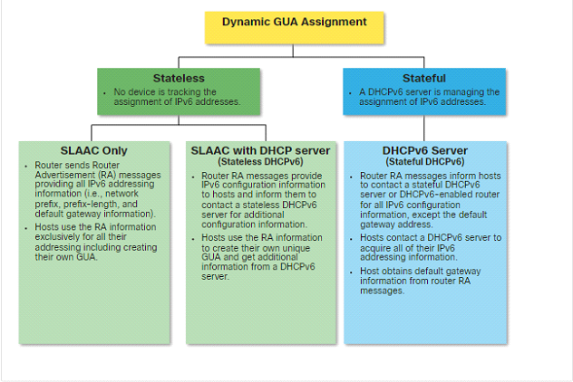
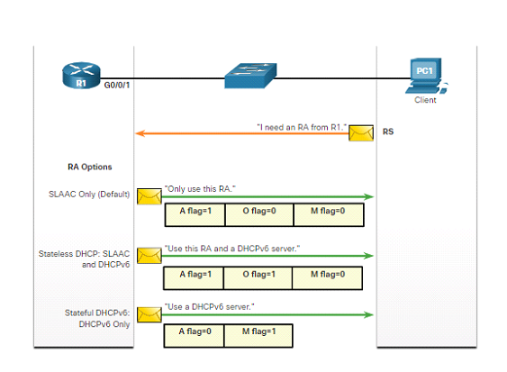
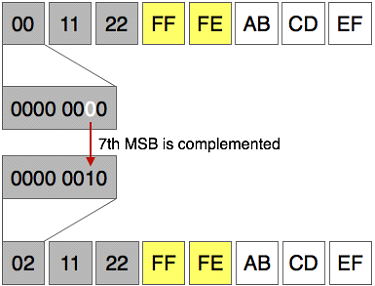
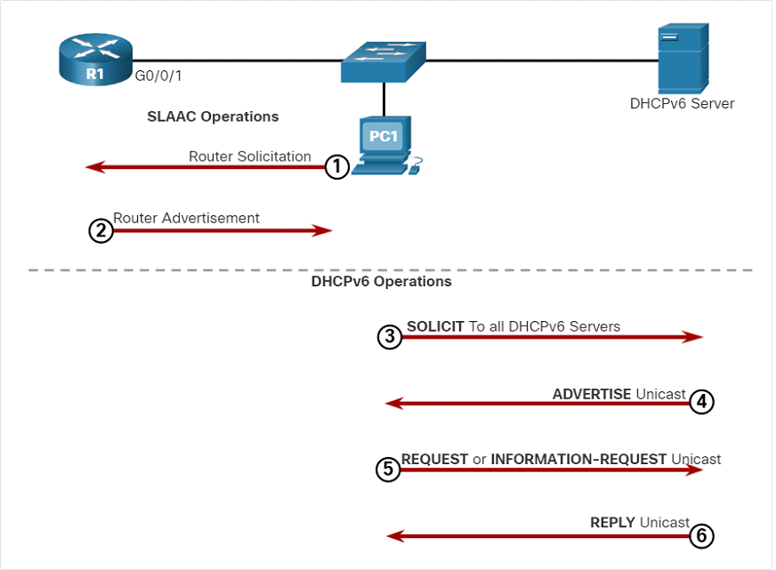

DHCP6 - funkce, možnosti konfigurace (rozsahy IP adres, dle MAC adresy), použití
RA(Router Advertisement) message je posílán každých 200 vteřin.
RS (Router solicitation) posílá klient když žádá o RA. Tu posílá pokud je nastaven aby získal dynamicky v tu chvíli ji posílá na all-routers multicast address of ff02::
RA (Router Advertisement) posílá router s informacemi jak jsi nastavit adresu nebo si o ni zažádat.
DHCPv6
IPv6 link-local adresa je automaticky vytvořená hostem když se nabootuje a Etherent interface je aktivní.
IPv6 GUA může být přiřazen dynamicky za použití stateless nebo stateful způsobu. Stateless I stateful metody využívají ICMPv6 RA message aby dali informaci klientovy jak vytvořit nebo obdržet IPv6 adresu.

RA Flags
Rozhodnutí jak si klient nastaví IPv6 GUA závisý na nastavení RA message. ICMPv6 RA message obsahuje tři flags pro rozpoznání možností nastavení adresy.
A flag - This is the address autoconfiguration flag. Use stateless address autoconfiguration (SLAAC) to create an IPv6 GUA.
O flag - This is the Other Configuration flag. Other information is available from a stateless DHCPv6 server.
M flag - This is the Managed Address Configuration flag. Use a stateful DHCPv6 server to obtain an IPv6 GUA.

SLAAC
Dovoluje hostům si vytvářet vlastní GUA IPv6 adresu bez potřeby DHCPv6 serveru. SLAAC využívá ICMPv6 RA message kter poskytuje adresování a jiné potřebné informace, které by normálně poskytoval DHCPv6 server. Počítač také může poslat RS message a vyžádat si RA message od routeru.
SLAC může být samotný nebo může fungovat i s DHCPv6
Generování IP adresy
První 64bitů adresy dostane klient za pomoci RA message od routeru (Jedná se tedy o prefix). Následujících 64 bitů tedy musí být dogenerováno na počítači. Za pomocí jedné z dvou metod:
Random generated - 64 bitový interface ID je generován clientovým operačním systémem. Tuto metodu používají například Windows 10.
EUI-64 - Klient vytvoří Interface ID za pomocí své 48 bitové MAC adresy a host vloží do prostřed hex "FFFE" a invertuje hodnotu sedmého bitu v interface ID. Není to ale úplně bezpečné z důvodu sdílení vlastní MAC adresy.

DAD (Duplicate Address Detection)
Je ovšem potřeba ověřit že je možné používat nově vytvořenou IPv6 adresu. DAD proces se používá pro ujištění že IPv6 GUA je unikátní.
Využívá ICMPv6. Klient pošle ICMPv6 NS (Neighbor solicitation) messages speciálně zkonstruovanou multicast adresou... solicited-node multicast address. Tato adresa duplikuje posledních 24 bitů IPv6 adresy klienta. Pokud žádné další zařízení neodpoví s NA (Neighbor advertisement) message pak je garantované že je adresa unikátní a klient ji může používat. V opačném případě musí operační system vytvořit nové interface ID.
I když kvůli velkému množství kombinací adresy by teoreticky nebylo potřeba DAD ICMPv6 message posílat stejně většina zařízení ho posílá bez ohledu na to jestli si adresu vygenerovala sama nebo jí dostala od DHCPv6 serveru. Navíc to doporučuje přímo The Internet Engineering Task Force (IETF).
DHCPv6 stateless stateful
Stateless stále využívá SLAAC ale některé informace jsou dotažené z DHCPv6 serveru.
Stateful se obejde bez SLAAC.
Server to client DHCPv6 messages use UDP destination port 546 while client to server DHCPv6 messages use UDP destination port 547
The host sends and RS message
Klient pošle RS message všem IPv6 enabled routers.
The router responds with an RA message.
Router obdrží RS a odpovídá s RA značící že klient započal komunikaci s DHCPv6 serverem.
The host sends a DHCPv6 SOLICIT message
Klient potřebuje najít DHCPv6 server tím pádem posílá DHCPv6 SOLICIT na rezervovanou IPv6 multicast all DHCPv6 server address ff02::1::2. Router nebude posílat message do jiné sítě protože má local-link scope.
The DHCPv6 server respons with an ADVERTISE message.
Jeden nebo více server odpoví s DHCPv6 ADVERTISE unicast message, která informuje klienta že server je dostupný pro DHCPv6 service.
The host responds to the DHCPv6 server
Stateless DHCPv6 client - Klient si vytvoří IPv6 adresu za pomocí prefix z RA a self generated interface ID. Client pošle DHCPv6 INFORMATION-REQUEST message DHCPv6 serveru žádající dodatečné informace (DNS server apod.)
Stateful DHCPv6 client - Klient pošle DHCPv6 REQUEST message DHCPv6 serveru za účelem obdržení všech potřebných IPv6 konfiguračních parametrů.
The DHCPv6 server sends a REPLY message.
Server posílá DHCPv6 REPLY unicast message klientovy. Obsah zprávy záleží na tom jestli odpovídá na REQUEST nebo INFORMATION-REQUEST zprávu.

Konfigurace
Nastavení IPv6 adresy na daném interface můžeme ověřit:
R1# show ipv6 interface G0/0/1
Povoleni SLAAC
R1(config)# ipv6 unicast-routing-> SLAAC byl povolen
Povoleni stateless DHCPv6
R1(config-if)#ipv6 nd other-config-flag-> nastaveni O na 1
Povoleni stateful DHCPv6
R1(config)# int g0/0/1
R1(config-if)# ipv6 nd managed-config-flag => nastavení M na 1 povolení Stateful
R1(config-if)# ipv6 nd prefix default no-autoconfig => nastaveni A na 0 zakázání SLAAC
Stateless DHCPv6 server
R1(config)# ipv6 unicast-routing
R1(config)# ipv6 dhcp pool IPV6-STATELESS
R1(config-dhcpv6)# dns-server 2001:db8:acad:1::254
R1(config-dhcpv6)# domain-name example.com
R1(config-dhcpv6)# exit
R1(config)#
R1(config)# interface GigabitEthernet0/0/1
R1(config-if)# description Link to LAN
R1(config-if)# ipv6 address fe80::1 link-local
R1(config-if)# ipv6 address 2001:db8:acad:1::1/64
R1(config-if)# ipv6 nd other-config-flag
R1(config-if)# ipv6 dhcp server IPV6-STATELESS
R1(config-if)# no shut